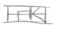
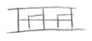

![[Fire Marble Dome Combination]](./images/fmd-combo.gif)
The Second Dream | Home | The Fire Marble Dome Puzzle
It was mid-morning when I finally awoke. It was my third day on Riven. My third day of trying to rescue Catherine. But after searching almost all of the Riven Islands, I knew she was being held in a prison, but I had no idea where it was. After my venture in the Riven village and my run in with the Guild Master, I decided it would be best to stay hidden for awhile.
I ate some of the food I packed and went over the notes in my journal. I estimated I had enough food for about one more day. After that I would have to eat the local food. But my concern over nutrition was outweighed by my greater concern was the instability of Riven itself. How long would it be before Gehn's handiwork finally collapsed?
I had learned a lot yesterday. From Gehn's equipment on Survey Island, I had learned that Riven is broken up into five islands. Each island has a fire marble dome, and each dome probably Linking Book. The Linking Books presumably lead to a new Age Gehn is working on. Each dome needs to be opened by a special combination entered on a set of sliding switches. More than likely, the same combination works on every dome.
All of the smaller domes are linked by pipes to the gigantic dome on the first island. Each pipe is labeled on a chart by the block-symbols used to represent each island. The giant dome provides power to the smaller domes. A source of power is apparantly needed in order to make the linking books work.
The combination to the fire marble domes is....
I turned to the last page in my journal and went over my chart on the D'ni numbers that I knew.
The first number was a seven, but I wasn't sure what the other numbers were. The second number looked like a combination of the three and the ten. Did that mean it was the number thirteen? The third, fourth, and fifth numbers looked vaguely similar to the others, but I had no idea what they represented.
Looking at the number chart, I began to notice a pattern. The numbers one through five were identical to six through ten, except six through nine had a horizontal line going through the middle. The line could indicate some kind of increment. The number five was a square with a horizontal line, and the number one was a box with a single vertical line.
The number ten has a curved arch along the bottom, while the number two has a curved arch along the left side. Essentially, the symbol for the number ten is the symbol for the number two turned counter-clockwise ninety degrees.
And the number five is identical to the number one turned left ninety degrees.
Maybe the turning of the number symbol is how the Riven number system increments numbers beyond the base symbols. If that's true, then the people of Riven use a base five number system.
I tried to redraw the number table into two columns.

It appeared that once the five symbols were used, the next digit field was represented by rotating the second digit ninety degreed to the left. I took my new number chart and redrew it.

I didn't have any idea what the number zero looked like, so for now I used an empty box. But what about numbers greater than 25? What numbers did  or  represent?
I crawled out of the jungle bushes and walked over to the tree idol. I took the elevator up to the walkway and made my way towards the viewing scope. When the scope image locked on to the D'ni symbol for the color Red on the surface of the fire marble dome, I clicked the button. The dome rotation slowed down, and it flipped open for me to access the inside shield.
I walked across to the dome and looked inside. Below the window of the smaller shield was the slider tray that would unlock the dome. If my theory about the D'ni number system was correct, it would be proven by my being able to open the cover.
After checking my chart, I believed that the combination to the dome was 7, 13, 15, 16, 22.
I arranged the sliders in the proper order and pushed the button.
The smaller shield of the fire marble dome rotated backwards to reveal the linking book, but the outer shell lifted up and closed shut around me. The fire marble dome was now sealed. My head was almost touching the top of the inside wall. A motor underneath me started to wind up and the outer wall of the dome began to rotate. I reached out to touch the dome wall, feeling the cold surface moving past my fingers.
The dome was reset to its closed position. If I had come here with a companion , we could have gained access to the Book without needing the combination. One person could have waited at the scope, while the other person waited at the dome. The person at the scope would open and close it, while the person at the dome just walked inside.
At the center of the dome interior was a metal pedestal. On the top of the pedestal was the Linking Book I saw through the window. Behind the pedestal was a series of wires protuding from a disk like an umbrella the fabric removed. At the end of each wire was a glass bulb with a tip pointing towards the middle of the disk. A single beam of light from the top of the dome was directed over the pedestal.
The pedestal rose upwards to bring the book to waist height. On the cover of the book was the number .
I opened the book and read the first few pages. I looked at Gehn's writing, trying to see if there were any similarities between his writing and Atrus'. I recognised most of the symbols, but I still had no idea what they meant. The handwriting style was similar, but the characters of the D'ni language were more complex than the English alphabet. It took more strokes to write a single letter, so it probably took more time and precision to write a page.
I turned the Book towards the last page. The descriptive window was as empty as a pitch black night. No colors, no shapes, no movements. It was like the Age linked to by this Book was a dead void. Either the Age was gone, or maybe the Book simply failed to work.
The Book needed power. Gehn wrote in his lab journal that he was never able to get his Linking Books to fully work. But he somehow cheated the flaws in the Book by pumping electricity into it. The power was supposed to come from the giant fire marble dome. From there it was probably transferred to the Books through the pedestal.
Maybe the power wasn't even turned on.
At the base of the pedestal was a foot switch. I stepped on the switch and the dome began to slow down its rotation. The pedestal lowered itself into its retracted position. When the dome rotation was at a full stop the dome opened up to let me out, and the inner dome encircled the pedestal protecting it from access. I stepped out of the dome and walked along the catwalk towards the tree.
I decided that I would need to inspect the giant dome further in order to see how power is sent to the smaller domes.